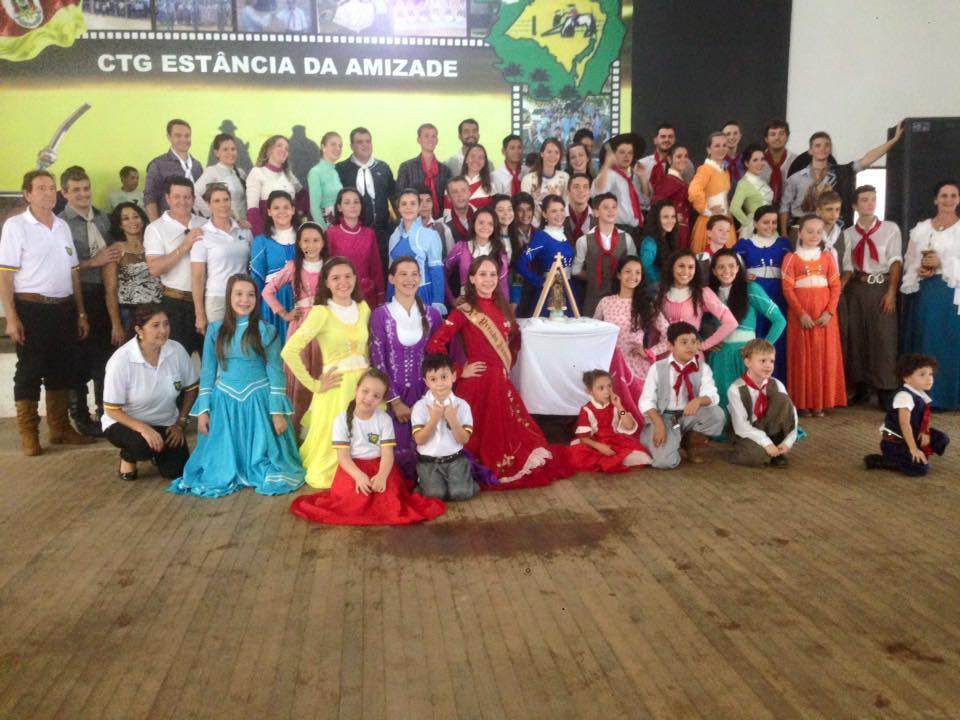

Um pouco sobre a história do CTG

O Centro de Tradições Gaúchas Estância da Amizade é uma organização dedicada a preservar e compartilhar as tradições do Rio Grande do Sul.
Nossos objetivos incluem:
- Promover a cultura gaúcha através de danças e música.
- Preservar as tradições e valores gaúchos.
- Realizar eventos e festivais culturais.
Dizem que o Gaúcho, ou mais precisamente o sul-brasileiro, migra com sua família para outros estados e leva consigo o hábito de tomar chimarrão, comer churrasco e falar TCHÊ; quando estão em duas famílias já formam as rodas do mate. Em 3 famílias, já se organizam e fundam um CTG. Ao reunirem 4 famílias já criam uma cooperativa. E em 5 famílias até conseguem quebrar a Agência local do Banco do Brasil.
Quem inventou esta desfeita, provavelmente já faz rondas pelos Campos da Eternidade, pois ao professar tamanho sacrilégio ofendeu a memória dos mais de milhares de tauras que já abriram outras invernadas por este mundaréu afora.
Foi aí que a indiada sacou dos "talher" e iniciou a Guerra dos Farrapos em um dia de lua cheia de 1835. Em Sinop, o primeiro CTG fundado foi o CTG Porteira da Amazônia em 1977, que, devido à diversidade cultural da cidade, foi renomeado como Clube Social Amazônia.
Pelos anos de 1979 e 1980, um grupo de gaúchos se desgarraram do antigo CTG de Sinop e fundaram o CTG "Estância da Amizade" em 1991. O CTG "Estância da Amizade" desafiou convenções e propôs a criação de um corpo de jurados habilitados para festivais, que foi posteriormente adotado pelo Movimento Tradicionalista Gaúcho do Mato Grosso.
Estiveram à frente do CTG "Estância da Amizade" como Patrões:
- VIRO LUDWIG
- BENO HENRIQUE SCHORR
- OSÓRIO FLAVIANO FINGER
- CELSO BOUFLEUR
- MAURO KOSIS
- EVANILDO SILVA
- DOMINGOS GUADAGNIN
- LOURDES BRIGNONE LAUXEN
- LIANE TONTINI
- RUDIMAR DALMASO
- SILVIO DOS SANTOS LIMA
- CELSO DALLAGNOL
Nos eventos de criação do MTG do Mato Grosso, o CTG "Estância da Amizade" desempenhou um papel importante. Este CTG tem orgulho de suas realizações e contribuições para o movimento tradicionalista.